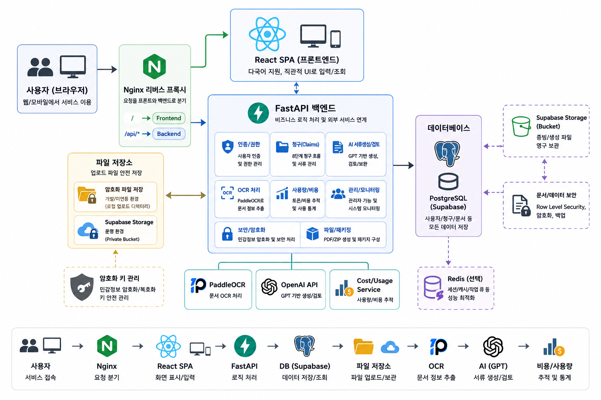

신청 준비 흐름
필리핀어 UI
제출 ZIP 패키지
사실·증빙·문서
Why Sanjae Oneshot
사고 이후의 혼란까지
근로자의 몫이어서는 안 됩니다.
산재 신청은 낯선 용어, 흩어진 증빙, 반복되는 정보 입력이 한꺼번에 겹칩니다. 산재원샷은 이 복잡함을 한 단계씩 이해하고 확인할 수 있는 흐름으로 바꿉니다.
무엇부터 준비해야 할지
신청 유형과 상황을 바탕으로 필요한 정보와 증빙을 순서대로 안내합니다.
서류 내용이 맞는지
OCR로 문서를 읽고 신청 정보와 이름·날짜·장소 같은 핵심 사실을 대조합니다.
한국어가 익숙하지 않아도
다국어 화면과 쉬운 문장으로 외국인·고령 사용자도 끝까지 따라갈 수 있습니다.
Guided Application Flow
복잡한 신청을, 명확한 흐름으로.
정보 입력부터 사실 검토와 PDF 생성까지 끊김 없이 연결합니다.
-
01
UNDERSTAND
상황을 이해합니다
신청인, 사업장, 사고 정보를 쉬운 질문에 따라 차례로 입력합니다.
신청인 정보사고 정보 -
02
READ & MATCH
증빙을 읽고 대조합니다
PaddleOCR이 진단서와 증빙 문서의 텍스트를 인식하고 핵심 정보를 확인합니다.
문서 업로드OCR 검증 -
03
DRAFT & REVIEW
초안을 만들고 검토합니다
AI가 사고경위서 초안을 만들고, 빠진 사실이나 불일치 항목을 다시 묻습니다.
AI 인터뷰사실 일치 -
04
PACKAGE
제출 패키지로 완성합니다
사용자가 최종 확인한 내용을 PDF 3종과 ZIP 패키지로 안전하게 생성합니다.
직접 수정PDF·ZIP
Human-in-the-loop AI
AI는 작성하고,
사람이 사실을 확정합니다.
생성된 문장을 바로 제출하지 않습니다. 사용자가 입력한 핵심 사실과 초안을 결정론적으로 대조하고, 누락되거나 모호한 항목이 있으면 다음 단계로 이동하기 전에 다시 확인합니다.
- ✓ 날짜·시간·장소·작업 내용 일치 확인
- ✓ 누락 항목에 대한 AI 보완 질문
- ✓ 최종 제출 전 사용자 직접 수정
Accessibility by Design
누구에게나 같은 출발선이 되도록.
언어와 나이가 신청의 장벽이 되지 않도록 네 가지 언어와 노인친화형 화면을 제공합니다. 단순한 글자 확대를 넘어 정보 구분, 대비, 클릭 영역을 함께 바꿉니다.
4개 언어큰 입력 영역고대비 화면명확한 상태 안내
Technology
신뢰할 수 있는 흐름을 위한
단단한 기술 구성.
React와 FastAPI를 중심으로 문서 인식, AI 생성, 데이터 저장, 암호화를 분리했습니다. 각 단계는 사용자가 확인한 사실만 다음 단계로 전달합니다.

- ReactFrontend
- FastAPIBackend
- PaddleOCRDocument OCR
- OpenAIDraft & Review
- SupabaseAuth · DB · Storage
- DockerInfrastructure
Safety Principles
민감한 문서를 다루는 만큼,
안전을 기능의 중심에 둡니다.
암호화 저장
개인정보와 업로드 문서는 AES-256-GCM 애플리케이션 암호화 계층을 거칩니다.
최소한의 접근
비공개 Storage와 사용자별 정책으로 신청 문서 접근 범위를 제한합니다.
사람의 최종 확인
AI 결과는 참고 초안이며, 제출 전 사실관계를 사용자가 직접 검토하고 확정합니다.
본 서비스는 근로복지공단의 공식 서비스가 아니며, 법률 판단이나 산재 승인 가능성을 제공하지 않습니다.